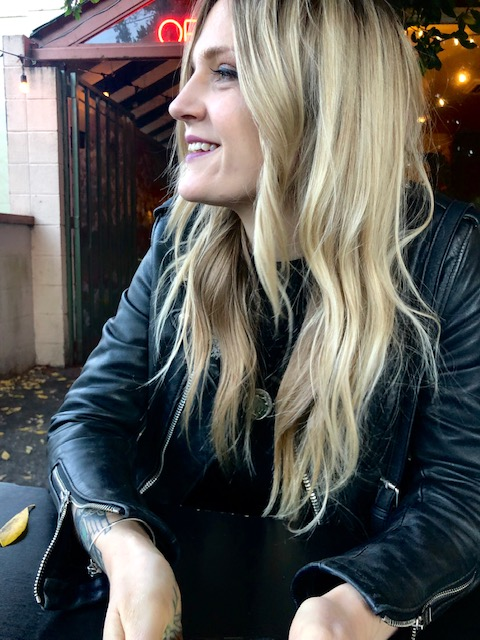

Josey Kinnaman Portfolio

About Me
Jozy Kinnaman is a junior web designer based out of Portland, Oregon. She will graduate from Epicodus in July of 2020
Projects
- Wayward Dogs Rescue Site
- This project demonstrates the use of CSS in html with cascading, the box model and floats.
- Trumpet Rules!
- This project demonstrates the use of branching specifically for the use of creating GH Pages.
- Neil Young Fan site
- A fan site for Neil Young that utilizes CSS concepts such as columns, the box model, and sidebars
Background
Interests